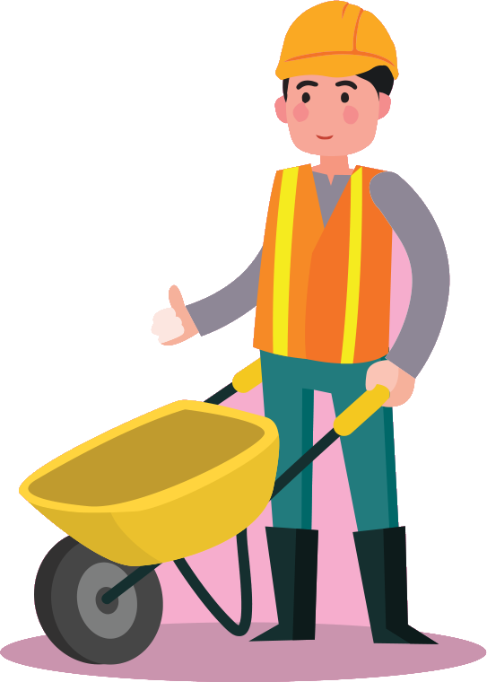

Chương 2:
An toàn lao động và sức khỏe nghề nghiệp

Mục lục:
-
Giới thiệu: Lời nói đầu và hướng dẫn sử dụng sổ tay


-
Chương 1: Cơ sở y tế và các chính sách bảo hiểm
- Câu 1. Tôi là người lao động của một công ty, hiện đang gặp vấn đề sức khoẻ và muốn đi khám bệnh. Tôi có thể khám, chữa bệnh ở đâu?
- Câu 2. Trước khi đi khám, nếu có thắc mắc, tôi có thể hỏi thông tin từ ai?
- Câu 3. Khi đi khám, tôi cần mang theo giấy tờ gì?
- Câu 4. Nếu tôi được chẩn đoán mắc bệnh mà cần phải nằm viện điều trị, tôi sẽ phải làm gì?
- Câu 5. Nếu bệnh tình của tôi không tiến triển, tôi có thể chuyển sang điều trị tại một bệnh viện hoặc cơ sở y tế khác không?
- Câu 6. Tôi cần làm gì để được chuyển viện?
- Câu 7. Làm thế nào để mua thuốc? Tôi có thể mua thuốc trực tiếp tại nhà thuốc, trên website hoặc ứng dụng di động mà không cần đơn thuốc của bác sĩ được không?
- Câu 8. Tôi thấy trên các trang mạng xã hội như Facebook và YouTube có nhiều quảng cáo về các phương pháp chữa bệnh, gồm cả thuốc tây y và đông y. Tôi có nên tin tưởng và liên hệ với những nguồn thông tin này không?
- Câu 9. Tôi từ nơi khác tới làm việc và có ký hợp đồng lao động với công ty. Vậy sau bao lâu làm việc tại công ty thì tôi được đóng BHXH bắt buộc?
- Câu 10. Tôi có được đăng ký tham gia bảo hiểm xã hội bắt buộc và bảo hiểm thất nghiệp không? Nếu được thì ai sẽ đăng ký cho tôi và số tiền tôi phải đóng hàng tháng được tính như thế nào?
- Câu 11. Tôi có thể kiểm tra bằng cách nào để biết mình đã được công ty đăng ký tham gia BHXH bắt buộc và bảo hiểm thất nghiệp hay chưa, cũng như việc đóng bảo hiểm đã đúng và đủ hay không?
- Câu 12. Công ty đã đăng ký cho tôi tham gia BHXH bắt buộc. Vậy tôi có thể hưởng các chế độ, trợ cấp như thế nào và các chế độ đó bao gồm những gì?
- Câu 13. Trong trường hợp người lao động gặp tai nạn giao thông nghiêm trọng, họ có được bảo hiểm xã hội bắt buộc chi trả không?
- Câu 14. Tôi là người lao động đã làm việc và tham gia đóng BHXH bắt buộc tại công ty được 15 năm. Do vấn đề sức khỏe, tôi không thể tiếp tục làm việc. Vậy tôi có thể nghỉ việc không? Nếu nghỉ việc, tôi có được hưởng chế độ bảo hiểm tương ứng với thời gian đã đóng trong 15 năm qua không?
- Câu 15. Nếu tôi bị bệnh ung thư vú, tôi được hưởng quyền lợi gì từ các loại bảo hiểm bắt buộc?
- Câu 16. Tôi đã ký hợp đồng lao động không xác định thời hạn với công ty, vậy tôi có được đóng bảo hiểm y tế bắt buộc không? Ai là người đóng, tôi hay công ty?
- Câu 17. Nếu tôi bị ốm và muốn đi khám bệnh, tôi cần làm gì để có thể sử dụng thẻ bảo hiểm y tế tại các cơ sở y tế? Những dịch vụ y tế nào sẽ được bảo hiểm y tế chi trả?
- Câu 18. (Chị Ngọc, 29 tuổi): Tôi đã đi khám bệnh bác sĩ chẩn đoán bị viêm phổi và chỉ định tôi vào viện điều trị nội trú (theo bác sĩ nói tôi sẽ nằm viện 5-7 ngày). Tôi muốn biết những dịch vụ y tế nào khi điều trị nội trú được bảo hiểm y tế chi trả?
- Câu 19. Nếu có thắc mắc hay cần giải thích về bảo hiểm y tế thì tôi nên liên hệ với ai?
- Câu 20. (Anh Thọ, 35 tuổi): Hiện tại tôi đang điều trị nội trú cho chứng đau lưng ở bệnh viện, nhưng tình trạng bệnh không thuyên giảm và được bác sĩ chỉ định chuyển đến một bệnh viện khác. Trong trường hợp này bảo hiểm y tế có tiếp tục chi trả chi phí chữa bệnh sau khi tôi chuyển đến bệnh viện khác không?
- Câu 21. Tôi là lao động nữ đang làm việc cho một công ty, đã tham gia BHXH bắt buộc và bảo hiểm y tế, hiện đang mang thai. Nếu sinh con ở bệnh viện công lập, tôi sẽ được bảo hiểm chi trả như thế nào?
- Câu 22. Mức hưởng bảo hiểm sinh con tại bệnh viện trái tuyến và bệnh viện tư có khác nhau không?
- Câu 23. Chị Ngọc (29 tuổi, công nhân may tại Bắc Ninh, có hai con nhỏ). Chị Ngọc muốn biết quyền lợi của lao động nữ khi có con nhỏ.
-
Chương 2: An toàn lao động và sức khỏe nghề nghiệp
- Câu 24. Tôi có thể yêu cầu công ty luôn cung cấp đầy đủ găng tay bảo hộ lao động không?
- Câu 25. Tôi làm trong một công ty cơ khí, bị ô nhiễm tiếng ồn với cường độ cao. Tôi nên làm gì để bảo vệ được bản thân và những người lao động khác tránh được tiếng ồn?
- Câu 26. Tôi có thể được cung câp thông tin rõ ràng về qui định an toàn lao động (ATLĐ) và trách nhiệm của doanh nghiệp khi bắt đầu làm việc ở một công ty không?
- Câu 27. Khi làm việc theo hợp đồng lao động, tôi có được tham gia đào tạo hoặc huấn luyện về an toàn lao động không?
- Câu 28. Tôi đang làm việc theo hợp đồng lao động. Nếu trong quá trình làm việc xảy ra tai nạn bị thương nặng thì tôi nên làm gì? Tôi nên liên hệ với ai để được hỗ trợ?
- Câu 29. Nếu tôi bị tai nạn lao động tại nơi làm việc và phải nhập viện điều trị, tôi sẽ được hưởng những hỗ trợ gì? Chi phí điều trị sẽ do ai chi trả?
- Câu 30. Trong trường hợp tôi bị ốm đau hoặc tai nạn lao động, tôi có được nghỉ việc và hưởng chế độ có lương không?
- Câu 31. Nếu tôi bị chấn thương do tai nạn lao động và không thể tiếp tục làm công việc hiện tại, liệu công ty có sắp xếp cho tôi làm việc ở vị trí khác phù hợp hơn không?
- Câu 32. Nếu tôi bị chấn thương do tai nạn lao động và không thể tiếp tục làm công việc hiện tại, tôi có được bồi thường không? Thủ tục bồi thường như thế nào?
- Câu 33. Đồng nghiệp của tôi không may qua đời do tai nạn lao động tại công ty. Chủ công ty và BHXH có phải bồi thường cho anh ấy không?
- Câu 34. Thủ tục bồi thường sẽ được thực hiện như thế nào?
- Câu 35. Trong trường hợp phải điều trị tại bệnh viện, tôi sẽ được hưởng chế độ bảo hiểm như thế nào?
- Câu 36. Tôi có được khám sức khỏe định kỳ nếu làm việc theo hợp đồng bán thời gian hoặc thời vụ không?
- Câu 37. Khám sức khỏe định kỳ cho người lao động (cả nam giới và nữ giới) sẽ bao gồm thăm khám và xét nghiệm nào?
- Câu 38. Tôi làm công việc liên quan tới hóa chất và chất độc hại tại nhà máy. Tôi có được khám sức khỏe định kỳ thường xuyên hơn không? Ngoài ra, nếu mắc bệnh nghề nghiệp, tôi sẽ được hưởng những quyền lợi và hỗ trợ nào?
- Câu 39. Anh Thọ hỏi: Bạn anh là một người làm trong nhà máy sản xuất xi-măng 3 năm, bị bệnh bụi phổi. Như vậy có phải bệnh nghề nghiệp không?
- Câu 40. Nếu đúng là bệnh nghề nghiệp, thì bạn anh được hưởng những quyền lợi gì?
- Câu 41. Tôi là Mai, 23 tuổi, người lao động đến từ một tỉnh phía Bắc chưa kết hôn, làm trong công ty linh kiện điện tử của nước ngoài được hai năm. Quản lý trực tiếp tôi là người Việt Nam. Người quản lý này thường la mắng và đối xử bất công với tôi tại nơi làm việc do tôi không đồng ý một số yêu cầu khiếm nhã của ông ấy. Tôi nên làm gì trong trường hợp này?
- Câu 42. Tôi thường xuyên bị một đồng nghiệp nam cư xử rất khó chịu và hay nhận xét các bộ phận nhạy cảm của tôi và đồng nghiệp nữ tại nơi làm việc. Đây có phải là hành vi quấy rối tình dục không?
- Câu 43. Tôi và các bạn nữ bị anh ta cư xử như vậy, chúng tôi nên làm gì?
- Câu 44. Bạn tôi làm trong một nhà hàng của một công ty khá nổi tiếng. Cô ấy thường bị khách hàng quấy rối tình dục (có hành vi đụng chạm không phù hợp, rủ đi chơi, thậm chí gạ gẫm qua đêm) khiến cô ấy cảm thấy bị xúc phạm. Tôi nên khuyên bạn tôi làm gì?
- Câu 45. Bạn của chị Ngọc làm giúp việc cho một gia đình. Gần đây, ông chủ có hành vi cố tình chạm vào mông, kèm theo những lời nói đùa cợt, gạ gẫm đi chơi. Hành vi này của ông chủ có phải là bình thường không? Bạn của chị Ngọc rất lo lắng, chị ấy nên làm gì?
- Câu 46. Bạn gái của Mai cho biết cô ấy đã bị bạn trai ép quan hệ tình dục trong khi bạn ấy chưa sẵn sàng cho việc này, hiện bạn ấy rất lo lắng. Trong trường hợp này, có phải bạo lực tình dục không?
- Câu 47. Bạn của tôi cần phải làm gì trong trường hợp này?
-
Chương 3: Chăm sóc sức khoẻ và môi trường sống
- Câu 48. Anh Đạt hỏi: Tôi chưa kết hôn nhưng có nhu cầu quan hệ tình dục. Khi quan hệ, tôi cần làm gì để đảm bảo an toàn?
- Câu 49. Tại sao cần sử dụng bao cao su đúng cách? Sử dụng bao cao su đúng cách là như thế nào?
- Câu 50. Sau khi quan hệ tình dục với bạn gái, tôi thấy bị đau khi đi tiểu. Tôi gặp vấn đề gì?
- Câu 51. Tôi là Mai, chưa kết hôn. Tôi và bạn trai có quan hệ tình dục nhưng chưa muốn có thai. Ngoài việc dùng bao cao su, nam và nữ thanh niên có thể áp dụng biện pháp tránh thai nào khác?
- Câu 52. Nếu đi khám, tôi nên đến đâu?
- Câu 53. Nếu tôi được chẩn đoán là mắc một trong các bệnh lây truyền qua đường tình dục, tôi có thể tự điều trị được không? Nếu không chữa trị các bệnh lây truyền qua đường tình dục cẩn thận, tôi có thể bị hậu quả gì?
- Câu 54. Anh Đạt hỏi: Làm thế nào để tôi có thể bảo vệ bản thân khỏi các bệnh lây truyền qua đường tình dục?
- Câu 55. Anh Đạt hỏi: Bạn tôi làm cùng công ty và mới đi xét nghiệm máu được thông báo là đã nhiễm HIV (anh ấy lo sợ không dám nói với ai). Liệu bạn tôi có cần phải thông báo với người quản lý hoặc người sử dụng lao động) không?
- Câu 56. Tôi là Đạt. Tôi đã có người yêu ở quê và gần đây tôi có quan hệ tình dục với một cô gái (tôi có quen nhưng không biết nhiều về cô ấy). Tôi đang rất lo sợ bị mắc bệnh lây truyền qua đường tình dục do mối quan hệ này. Tôi có thể bị mắc bệnh gì khi tôi có quan hệ tình dục như vậy?
- Câu 57. Nếu không may bị mắc các bệnh đó, tôi có thể nhận biết qua các biểu hiện nào?
- Câu 58. Tôi có nên nói việc mình có những biểu hiện bất thường với cô gái mà tôi đã quan hệ không?
- Câu 59. Kinh nguyệt của tôi không được đều. Tôi nên làm gì?
- Câu 60. Tôi thấy nhiều đồng nghiệp nữ và bạn tôi nói là mỗi lần sinh hoạt tình dục xong lại uống thuốc tránh thai khẩn cấp. Liệu thuốc tránh thai khẩn cấp có nguy hiểm và gây hậu quả gì không?
- Câu 61. Tôi nên dùng thuốc tránh thai khẩn cấp trong trường hợp nào?
- Câu 62. Tôi 22 tuổi, đã có bạn trai và thỉnh thoảng chúng tôi có quan hệ tình dục. Gần đây tôi thấy hay buồn nôn và chóng mặt nên lo lắng có thể đã mang thai nhưng hiện tại tôi chưa muốn lập gia đình. Nếu tôi có thai và không muốn sinh con thì tôi nên làm thế nào?
- Câu 63. Nếu tôi có thai ngoài ý muốn và muốn chấm dứt thai kỳ thì tôi phải làm thế nào?
- Câu 64. Phá thai có nguy hiểm không?
- Câu 65. Có người nói nếu phá thai sau này tôi có thể bị vô sinh? Điều này có đúng không?
- Câu 66. Tôi là Mai, 23 tuổi, sắp kết hôn. Nhiều bạn khuyên tôi nên đi xét nghiệm viêm gan B và HIV trước hôn nhân. Việc này có thực sự cần thiết không? Tại sao bạn lại khuyên tôi như vậy?
- Câu 67. Tôi nên đi xét nghiệm ở đâu?
- Câu 68. Tôi đang mang thai và cảm thấy khoẻ mạnh, tôi có cần đi khám thai không?
- Câu 69. Tôi nên đi khám thai ở đâu?
- Câu 70. Tôi nên đi khám bao nhiêu lần trong kỳ mang thai? Và nên khám vào thời gian nào của thai kỳ?
- Câu 71. Tôi có phải tiêm hay uống thuốc gì trong thời kỳ mang thai không?
- Câu 72. Người lao động nên làm gì khi cảm thấy căng thẳng trong công việc?
- Câu 73. Tôi rất nhớ gia đình và bạn bè trong quãng thời gian phải sống xa quê. Tôi có thể làm gì để bớt nhớ nhà?
- Câu 74. Tôi đang mang thai con đầu lòng và nghe nhiều về trầm cảm đối với phụ nữ trong thời kỳ mang thai và sau sinh. Tôi nên làm gì?
- Câu 75. Tôi rất phân vân, có phải người có vấn đề về tâm thần là người điên không?
- Câu 76. Tôi vừa chuyển việc sang công ty mới. Gần đây, tôi cảm thấy buồn, dễ cáu giận và khó kiểm soát cảm xúc. Tôi nên làm gì để cải thiện tâm trạng và cảm thấy tốt hơn?
- Câu 77. Tôi là lao động nữ tại công ty dệt may. Gần đây, tôi cảm thấy mất hứng thú với các hoạt động mình từng yêu thích và đôi khi nghĩ đến tự tử. Tôi nên làm gì?
- Câu 78. Người lao động nên làm gì để bảo vệ giấc ngủ khi phải làm việc ca đêm?
- Câu 79. Thỉnh thoảng tôi bị chồng đánh khi anh ấy thua bạc và đòi tiền. Tôi cảm thấy suy nhược và mệt mỏi. Tôi nên làm gì?
- Câu 80. Tôi là nữ lao động 35 tuổi, tôi sống cùng chồng và hai con. Công việc của tôi ở công ty là làm theo ca: 1 tuần làm đêm và 2 tuần làm ngày và sau tuần làm đêm tôi được nghỉ 2 ngày. Trong lúc làm việc ở công ty, tôi phải đứng toàn bộ thời gian để kiểm tra sản phẩm trong chuỗi công việc. Tôi nên làm gì để bản thân không bị căng thẳng và giảm mệt mỏi về cuộc sống hiện tại?
- Câu 81. Tôi là người đồng tính và cảm thấy mình dễ bị phân biệt đối xử. Điều này có ảnh hưởng tới sức khỏe tâm thần của tôi không? Tôi có thể gặp phải các vấn đề sức khoẻ gì?
- Câu 82. Tôi nên làm gì và tìm đến đâu để được tư vấn?
- Câu 83. Chị Mai là công nhân trong một nhà máy điện tử tại khu công nghiệp (KCN) ở Hà Nội, nơi có mật độ công nhân cao và điều kiện sống khá khó khăn. Chị thuê nhà trọ ở chung với bạn trai. Môi trường sống của chị Mai trong khu vực này là sự kết hợp giữa môi trường công nghiệp và sống trong khu trọ không đảm bảo về không gian sống và điều kiện vệ sinh. Liệu tình trạng ô nhiễm tiếng ồn và không khí là những yếu tố có thể ảnh hưởng đến sức khỏe của chị Mai và bạn trai chị không? Chị Mai và bạn trai nên làm gì để cải thiện môi trường sống tốt hơn?
- Câu 84. Tôi mới chuyển đến thành phố mới sinh sống. Làm thế nào để tôi có thể tìm được nhà trọ phù hợp?
- Câu 85. Chị Ngọc (29 tuổi) và gia đình sống tại một khu công nghiệp ở Bắc Ninh, nơi có môi trường công nghiệp và ô nhiễm tiếng ồn. Chị Ngọc thường xuyên mất ngủ. Liệu sức khoẻ của chị Ngọc và gia đình có bị ảnh hưởng bởi tiếng ồn từ khu công nghiệp không?
- Câu 86. Anh Đạt (25 tuổi) sống trong một khu trọ tại thành phố Đồng Nai cùng với các bạn đồng nghiệp. Môi trường sống của anh có thể gặp phải các vấn đề như thiếu không gian sống riêng tư, chất lượng nhà trọ không đảm bảo về vệ sinh, và điều kiện sống bị ảnh hưởng bởi sự đông đúc, tắc nghẽn của khu vực công nghiệp. Anh Đạt nên làm gì?
- Câu 87. Nước sinh hoạt ở nhà trọ của tôi có vẻ không được tốt, nước có mùi và cặn bẩn. Điều này có ảnh hưởng đến sức khỏe của gia đình tôi tôi không? Tôi nên làm gì?
- Câu 88. Gần đây có một quán karaoke mới mở ngay cạnh nơi tôi ở. Tôi không thể ngủ được vì những tiếng ồn quá lớn từ quán karaoke. Điều này có hại cho sức khỏe của tôi không? Tôi nên làm gì?
- Câu 89. Khu trọ tôi ở rất chật chội, gần đây có nhiều người hàng xóm bị cúm A. Tôi nên làm gì để bảo vệ sức khỏe?
- Câu 90. Khu trọ tôi ở bị ngập úng do mưa lớn và luôn bị ảnh hưởng của mưa, bão khiến cuộc sống sinh hoạt thường ngày gặp rất nhiều khó khăn. Tôi phải làm gì để bảo vệ sức khỏe và đảm bảo an toàn?
- Câu 91. Khu trọ tôi thuê ở xa bệnh viện, hoàn cảnh gia đình tôi rất khó khăn. Nếu bị bệnh, tôi phải làm thế nào?
-
Chương 4: Phòng ngừa bệnh tật
- Câu 92. Làm sao tôi biết mình có thể đang mắc các bệnh truyền nhiễm? Những biểu hiện đặc trưng của loại bệnh này là gì?
- Câu 93. Tôi bị ho và sốt, có phải tôi bị nhiễm trùng hô hấp không? Tôi có cần sử dụng thuốc kháng sinh không?
- Câu 94. Nếu bị nhiễm trùng hô hấp, tôi nên đi khám ở đâu?
- Câu 95. Gia đình tôi có con bị sốt xuất huyết. Tôi nên làm gì?
- Câu 96. Tôi cần làm gì để phòng tránh bệnh sốt xuất huyết cho gia đình?
- Câu 97. Bệnh lao có biểu hiện như thế nào?
- Câu 98. Tôi có thể đi khám và làm xét nghiệm bệnh lao ở đâu?
- Câu 99. Nếu tôi được chẩn đoán là bị mắc bệnh lao, tôi có thể tự mua thuốc điều trị được không?
- Câu 100. Tôi vừa bị chó lạ cắn khi đang trên đường đi làm về. Tôi có nguy cơ bị mắc bệnh dại không? Tôi cần làm gì để xử lý và phòng ngừa tạm thời?
- Câu 101. Tôi bị chó cắn, có thể chữa chó dại cắn bằng thuốc đông y không? Tôi nghe nhiều người nói, tiêm vắc-xin phòng dại rất hại sức khỏe?
- Câu 102. Tôi và mấy người bạn đi nhậu (lòng lợn, tiết canh). Sau khi ăn xong về, ba trong sáu người chúng tôi bị đau bụng, tiêu chảy nặng. Có phải chúng tôi bị đau bụng đi ngoài là do ăn tiết canh không? Chúng tôi phải làm gì?
- Câu 103. Anh Thọ 35 tuổi đến từ tỉnh Ninh Bình và đã kết hôn, hỏi: Sau nhiều năm làm việc tại một công ty, tôi vừa bị mất việc nên tâm trạng bất ổn. Tôi thường rủ bạn bè đi uống rượu để giải khuây. Sau khi uống rượu tôi cảm thấy tốt hơn, thậm chí nếu một ngày không uống rượu, tâm trạng của tôi lại trở nên tồi tệ. Trong trường hợp này, tôi nên làm gì?
- Câu 104. Anh Đạt 25 tuổi hỏi: Trước đây tôi chưa từng hút thuốc lá. Sau khi vào làm việc cho một công ty tại thành phố Đồng Nai, các bạn đồng nghiệp của tôi đã hút thuốc và đưa cho tôi hút thử. Sau khi hút thuốc, tâm trạng của tôi bớt căng thẳng, từ đó tôi thường xuyên sử dụng thuốc lá và ngày một nhiều lên. Như vậy có hại đến sức khoẻ không?
- Câu 105. Tôi nên làm gì để giảm hút thuốc lá?
- Câu 106. Sau giờ làm, tôi thường đến các quán bar, câu lạc bộ để gặp gỡ bạn bè. Một số bạn bè của tôi đã dùng ma túy và nhiều lần rủ rê tôi thử. Từ chối mãi tôi cảm thấy ngại, thậm chí tôi còn bị bạn bè nói là "khác người" và có nguy cơ bị tẩy chay. Tôi nên làm gì?
- Câu 107. Tôi đã có bạn gái ở quê, nhưng gần đây đã phát sinh quan hệ tình dục với gái mại dâm. Sau đó, tôi cảm thấy rất lo lắng. Tôi nên làm gì?
- Câu 108. Gần đây, đồng nghiệp của tôi kiếm được khá nhiều tiền từ việc đánh bạc qua các ứng dụng trên điện thoại. Điều này khiến tôi nảy sinh suy nghĩ muốn thử để “đổi đời”. Tôi có nên chơi thử không?
-
Thông tin bổ sung: Đường dây nóng và cơ sở y tế
2.1. Tai nạn lao động
Tai nạn lao động và quyền lợi của người lao động khi bị tai nạn nghề nghiệp
a. Tai nạn lao động Tai nạn lao động là tai nạn xảy ra trong quá trình làm việc, liên quan đến công việc hoặc nhiệm vụ được giao. Những tai nạn này gây tổn hại đến sức khỏe, thân thể hoặc thậm chí tính mạng của người lao động. Ví dụ điển hình: Ngã từ độ cao khi xây dựng, chấn thương do máy móc, bỏng hóa chất, hoặc ngộ độc khí độc trong môi trường làm việc.
b. Quyền lợi của người lao động khi bị tai nạn lao động Theo Bộ luật Lao động 2019 và các quy định liên quan, người lao động bị tai nạn lao động được hưởng các quyền lợi sau:
1. Quyền được chăm sóc y tế:
- Được cấp cứu, điều trị và phục hồi chức năng tại cơ sở y tế.
- Các chi phí điều trị tai nạn lao động (kể cả vận chuyển đến cơ sở y tế) sẽ do người sử dụng lao động hoặc bảo hiểm tai nạn lao động chi trả.
2. Quyền được bồi thường hoặc trợ cấp:
- Bồi thường:
- Người lao động bị tai nạn do lỗi của người sử dụng lao động sẽ được bồi thường tối thiểu bằng 1,5 lần đến 30 tháng tiền lương tùy mức độ tổn hại sức khỏe.
- Trợ cấp:
- Nếu tai nạn không phải lỗi của người sử dụng lao động, người lao động vẫn được nhận trợ cấp một lần hoặc hàng tháng dựa trên mức độ tổn thương và khả năng lao động còn lại.
3. Quyền được nghỉ dưỡng và phục hồi chức năng:
- Người lao động có quyền nghỉ phép để điều trị và phục hồi sức khỏe.
- Sau điều trị, nếu sức khỏe chưa phục hồi hoàn toàn, có quyền yêu cầu người sử dụng lao động bố trí công việc phù hợp hoặc được nghỉ chế độ phục hồi chức năng theo quy định.
4. Quyền được hưởng chế độ bảo hiểm tai nạn lao động:
- Nếu đóng bảo hiểm xã hội, người lao động được hưởng thêm trợ cấp từ Quỹ bảo hiểm tai nạn lao động – bệnh nghề nghiệp.
- Quyền lợi bao gồm trợ cấp hàng tháng hoặc một lần, tùy mức độ suy giảm khả năng lao động (từ 5% trở lên).
5. Quyền được bảo đảm việc làm:
- Sau khi hồi phục, người lao động được quyền quay lại làm việc tại vị trí cũ hoặc công việc phù hợp với sức khỏe.
- Không bị chấm dứt hợp đồng lao động vì lý do tai nạn lao động.
6. Quyền được yêu cầu điều tra và xử lý:
- Người lao động có quyền yêu cầu công ty điều tra nguyên nhân tai nạn lao động.
- Nếu tai nạn do vi phạm quy định an toàn lao động, người lao động có thể tố cáo để cơ quan chức năng xử lý trách nhiệm của người sử dụng lao động.
Tôi có thể yêu cầu công ty luôn cung cấp đầy đủ găng tay bảo hộ lao động không?
Có, bạn hoàn toàn có quyền yêu cầu công ty phải luôn cung cấp đầy đủ găng tay và các thiết bị bảo hộ lao động cần thiết khi làm việc với hóa chất. Đây là quyền lợi chính đáng của người lao động và được pháp luật bảo vệ.
Tôi làm trong một công ty cơ khí, bị ô nhiễm tiếng ồn với cường độ cao. Tôi nên làm gì để bảo vệ được bản thân và những người lao động khác tránh được tiếng ồn?
Môi trường làm việc trong công ty cơ khí thường xuyên bị ô nhiễm tiếng ồn với cường độ cao, bạn và các người lao động khác có nguy cơ bị ảnh hưởng nghiêm trọng đến sức khỏe, đặc biệt là thính giác. Dưới đây là những việc bạn nên làm để bảo vệ bản thân và đồng nghiệp khỏi tác hại của tiếng ồn:
1) Sử dụng đầy đủ phương tiện bảo vệ cá nhân như nút tai, chụp tai chống ồn khi làm việc.
2) Tham gia tập huấn an toàn, vệ sinh lao động, nâng cao ý thức tự bảo vệ.
3) Yêu cầu khám sức khỏe định kỳ, đặc biệt là kiểm tra thính lực.
4) Báo cáo kịp thời nguy cơ rủi ro do tiếng ồn với người quản lý hoặc bộ phận an toàn.
5) Kiến nghị doanh nghiệp đánh giá, đo đạc mức tiếng ồn định kỳ, nếu vượt ngưỡng cho phép thì phải có biện pháp giảm thiểu phù hợp.
Tôi có thể được cung câp thông tin rõ ràng về qui định an toàn lao động (ATLĐ) và trách nhiệm của doanh nghiệp khi bắt đầu làm việc ở một công ty không?
Khi bắt đầu làm việc ở một công ty, bạn có quyền và nghĩa vụ tìm hiểu kỹ các quy định và trách nhiệm của doanh nghiệp về ATLĐ. Điều này không chỉ để bảo vệ bản thân bạn mà còn để đảm bảo sự an toàn cho tập thể. Những quy định này bao gồm:
1) Đào tạo ATLĐ ban đầu khi vào công ty
*Người lao động mới phải được tập huấn về an toàn, vệ sinh lao động trước khi bắt đầu làm việc.
*Nội dung gồm:
- Nhận biết các nguy cơ, rủi ro trong công việc.
- Hướng dẫn sử dụng thiết bị bảo hộ cá nhân.
- Quy trình xử lý sự cố hoặc tai nạn lao động.
- Nội quy, quy trình vận hành an toàn tại nơi làm việc.
2) Cung cấp và sử dụng thiết bị bảo hộ
*Công ty phải trang bị đầy đủ phương tiện bảo hộ lao động phù hợp (như mũ, găng tay, kính, khẩu trang...).
*Người lao động có trách nhiệm sử dụng đúng cách các thiết bị này.
3) Người lao động cần tuân thủ nội quy và hướng dẫn an toàn
*Phải làm việc đúng quy trình kỹ thuật.
*Không tự ý vận hành máy móc nếu chưa được hướng dẫn.
*Không làm việc khi không đảm bảo sức khỏe, hoặc trong tình trạng say rượu, mệt mỏi.
4) Báo cáo kịp thời khi có nguy hiểm
*Nếu phát hiện nguy cơ mất an toàn, người lao động phải báo ngay cho quản lý hoặc bộ phận an toàn.
*Có trách nhiệm tham gia cứu nạn hoặc sơ tán nếu được yêu cầu.
5) Khám sức khỏe và hồ sơ y tế: Một số ngành nghề yêu cầu người lao động khám sức khỏe định kỳ hoặc trước khi làm việc.
Khi làm việc theo hợp đồng lao động, tôi có được tham gia đào tạo hoặc huấn luyện về an toàn lao động không?
- Bạn có được tập huấn về An toàn lao động.
- Theo Điều 17 của Luật An toàn, vệ sinh lao động năm 2015, người lao động phải được huấn luyện An toàn lao động trước khi làm việc, khi chuyển công việc hoặc khi có thiết bị, công nghệ mới.
- Doanh nghiệp có trách nhiệm tổ chức tập huấn định kỳ để người lao động nhận biết nguy cơ, phòng ngừa tai nạn lao động và bệnh nghề nghiệp.
2.2. Quyền lợi của người lao động liên quan đến tai nạn lao động
Tôi đang làm việc theo hợp đồng lao động. Nếu trong quá trình làm việc xảy ra tai nạn bị thương nặng thì tôi nên làm gì? Tôi nên liên hệ với ai để được hỗ trợ?
Nếu bạn bị tai nạn lao động, những việc cần làm ngay:
- Báo ngay cho người sử dụng lao động (quản lý trực tiếp, tổ trưởng, hoặc bộ phận nhân sự).
- Yêu cầu đưa đi cấp cứu kịp thời tại cơ sở y tế gần nhất.
- Liên hệ với Công đoàn cơ sở (nếu có) để được hỗ trợ.
- Ghi nhận lại bằng chứng (nếu có) để phục vụ việc giám định tai nạn sau này.
- Người sử dụng lao động có trách nhiệm báo cáo tai nạn lao động với cơ quan chức năng theo quy định tại Điều 34 Luật An toàn, vệ sinh lao động 2015.
Nếu tôi bị tai nạn lao động tại nơi làm việc và phải nhập viện điều trị, tôi sẽ được hưởng những hỗ trợ gì? Chi phí điều trị sẽ do ai chi trả?
Bạn sẽ nhận được hỗ trợ từ công ty nơi bạn làm việc, Theo Điều 38 và 39 Luật An toàn, vệ sinh lao động 2015:
- Người sử dụng lao động phải chi trả toàn bộ chi phí y tế sơ cấp cứu, điều trị ban đầu.
- Nếu bạn tham gia bảo hiểm tai nạn lao động (qua BHXH bắt buộc), bạn sẽ được:
- Chi trả chi phí y tế theo qui định.
- Trợ cấp tai nạn lao động (một lần hoặc hàng tháng tùy mức độ suy giảm khả năng lao động).
- Phục hồi chức năng nếu có yêu cầu.
- Nếu chi phí điều trị vượt quá mức được bảo hiểm y tế chi trả, người lao động sẽ phải tự thanh toán phần chi phí còn lại.
- Trong một số trường hợp, tùy theo chính sách của từng công ty, người sử dụng lao động có thể hỗ trợ thêm một phần chi phí này, nhưng điều đó không phải là nghĩa vụ bắt buộc.
Trong trường hợp tôi bị ốm đau hoặc tai nạn lao động, tôi có được nghỉ việc và hưởng chế độ có lương không?
- Nếu bạn phải nghỉ làm để điều trị và phục hồi do tai nạn lao động, người sử dụng lao
động có trách nhiệm trả đủ lương trong thời gian này theo quy định tại Điều 38 Luật An toàn, vệ sinh lao động 2015. Những ngày nghỉ này không bị trừ vào phép năm.
- Nếu bạn nghỉ do ốm đau thông thường, bạn sẽ được hưởng chế độ ốm đau do BHXH chi trả, không phải do công ty chi trả.
Nếu tôi bị chấn thương do tai nạn lao động và không thể tiếp tục làm công việc hiện tại, liệu công ty có sắp xếp cho tôi làm việc ở vị trí khác phù hợp hơn không?
Theo Điều 38 Luật An toàn, vệ sinh lao động 2015:
- Công ty có nghĩa vụ bố trí công việc phù hợp hơn với tình trạng sức khỏe của người lao động nếu bạn bị suy giảm khả năng lao động.
- Nếu không thể bố trí, hai bên có thể thỏa thuận chấm dứt hợp đồng, nhưng phải thực hiện các thủ tục hỗ trợ/bồi thường theo đúng qui định của pháp luật.
Nếu tôi bị chấn thương do tai nạn lao động và không thể tiếp tục làm công việc hiện tại, tôi có được bồi thường không? Thủ tục bồi thường như thế nào?
- Bạn được bồi thường theo Điều 38-39 Luật An toàn, vệ sinh lao động nếu tai nạn xảy ra
trong quá trình làm việc do lỗi của người sử dụng lao động.
- Thủ tục gồm:
1. Khai báo tai nạn và lập biên bản điều tra (do công ty phối hợp với công đoàn thực hiện).
2. Đi giám định mức suy giảm khả năng lao động (tại Hội đồng giám định y khoa).
3. Hồ sơ gồm: biên bản tai nạn, kết luận giám định, đơn đề nghị hưởng trợ cấp, sổ BHXH...
4. Nộp hồ sơ cho BHXH để được giải quyết trợ cấp hoặc bồi thường.
Đồng nghiệp của tôi không may qua đời do tai nạn lao động tại công ty. Chủ công ty và BHXH có phải bồi thường cho anh ấy không?
Theo Luật ATVSLĐ và Luật BHXH:
- Người sử dụng lao động phải bồi thường cho thân nhân người lao động nếu tai nạn do lỗi của công ty.
- BHXH chi trả trợ cấp tử tuất nếu người lao động tham gia đủ điều kiện.
- Ngoài ra, công ty phải hỗ trợ chi phí mai táng và các khoản khác theo thỏa thuận hoặc quy chế nội bộ.
Thủ tục bồi thường sẽ được thực hiện như thế nào?
Các bước chính của thủ tục bồi thường:
Bước 1
Bước 2
Điều tra tai nạn và lập biên bản xác nhận.
Giám định sức khỏe (hoặc giấy chứng tử nếu tử vong).
Bước 4
Bước 3
Nộp cho cơ quan BHXH hoặc công ty
Chuẩn bị hồ sơ gồm: (tùy chế độ cần nhận).
a. Biên bản tai nạn, quyết định giám định y khoa
b. Đơn đề nghị trợ cấp c. Giấy tờ tùy thân d. Sổ BHXH (nếu có)
Bước 5
Giải quyết bồi thường trong thời hạn tối đa 10-30 ngày theo quy định.
Trong trường hợp phải điều trị tại bệnh viện, tôi sẽ được hưởng chế độ bảo hiểm như thế nào?
Nếu bạn có tham gia bảo hiểm y tế (BHYT):
- Nếu không phải tai nạn lao động: Được chi trả một phần hoặc toàn bộ chi phí khám chữa bệnh theo mức hưởng BHYT. Mức hưởng bảo hiểm y tế tuỳ theo cơ sở y tế bạn nằm điều trị.
- Nếu là tai nạn lao động có xác nhận: ngoài BHYT, bạn còn được hưởng trợ cấp từ BHXH (theo nội dung các câu hỏi và trả lời ở trên).
2.3. Quyền lợi người lao động khi mắc phải bệnh nghề nghiệp
Sức khỏe nghề nghiệp và bệnh nghề nghiệp là gì? Người lao động di cư được hưởng những quyền lợi gì?
- Sức khỏe nghề nghiệp: Là trạng thái sức khỏe thể chất, tinh thần và xã hội của người lao động, đảm bảo cho họ có khả năng làm việc an toàn, hiệu quả, đồng thời không bị ảnh hưởng tiêu cực bởi các yếu tố nguy hại trong môi trường lao động. Điều này bao gồm việc phòng ngừa các bệnh nghề nghiệp và tai nạn lao động.
- Bệnh nghề nghiệp: Là những bệnh phát sinh do điều kiện lao động có hại hoặc do tiếp xúc với các yếu tố nguy hiểm, độc hại trong quá trình làm việc. Các bệnh này được liệt kê trong danh mục bệnh nghề nghiệp do Bộ trưởng Bộ Y tế ban hành và gây suy giảm khả năng lao động của người lao động từ 5% trở lên.
Quyền lợi của người lao động di cư theo Luật An toàn, Vệ sinh Lao động 2015: Người lao động di cư, cũng như các nhóm lao động khác, được hưởng nhiều quyền lợi liên quan đến an toàn, vệ sinh lao động, bao gồm:
- Quyền chăm sóc sức khỏe và bảo hiểm tai nạn lao động, bệnh nghề nghiệp:
- Được khám sức khỏe định kỳ ít nhất 01 lần/năm.
- Đối với lao động làm việc trong điều kiện độc hại, nguy hiểm, khám sức khỏe ít nhất 6 tháng/lần.
- Lao động nữ được khám chuyên khoa phụ sản định kỳ.
- Được tổ chức khám phát hiện và điều trị bệnh nghề nghiệp.
- Người sử dụng lao động chịu chi phí cho các hoạt động khám, điều trị bệnh nghề nghiệp và quản lý hồ sơ sức khỏe.
- Bồi thường và trợ cấp khi xảy ra tai nạn lao động, bệnh nghề nghiệp
- Nếu suy giảm khả năng lao động từ 5% trở lên, mức bồi thường ít nhất 1,5 tháng lương và tăng theo tỷ lệ suy giảm.
- Nếu suy giảm trên 81% hoặc tử vong, mức bồi thường ít nhất 30 tháng lương.
- Trợ cấp: Lao động tự gây ra tai nạn được trợ cấp ít nhất 40% mức bồi thường quy định.
- Người bị tai nạn khi đi làm theo tuyến đường hợp lý vẫn được hỗ trợ.
- Hỗ trợ tài chính từ Quỹ bảo hiểm tai nạn lao động, bệnh nghề nghiệp
- Được hỗ trợ khám và chữa bệnh nghề nghiệp, với mức tối đa 800.000 đồng/người/lần khám hoặc 15 triệu đồng/người chữa bệnh.
- Được hỗ trợ phục hồi chức năng lao động, tối đa 3 triệu đồng/người/lượt.
- Bồi dưỡng bằng hiện vật
- Được cung cấp thực phẩm hoặc đồ dùng để tăng sức đề kháng, thải độc trong điều kiện làm việc độc hại.
- Đảm bảo an toàn, vệ sinh lao động
- -Được trang bị các phương tiện bảo vệ cá nhân.
- Được hướng dẫn quy trình làm việc an toàn, vệ sinh lao động.
- Người lao động cần lưu ý bảo vệ quyền lợi của mình bằng cách tham gia bảo hiểm tai nạn lao động, bệnh nghề nghiệp và báo cáo ngay khi phát hiện các yếu tố nguy hiểm hoặc phát sinh bệnh nghề nghiệp để được hỗ trợ kịp thời.
Tôi có được khám sức khỏe định kỳ nếu làm việc theo hợp đồng bán thời gian hoặc thời vụ không?
- Theo Điều 21 Luật ATVSLĐ 2015, người sử dụng lao động có trách nhiệm tổ chức khám sức khỏe định kỳ cho người lao động có hợp đồng lao động từ 3 tháng trở lên, kể cả hợp
đồng bán thời gian hoặc thời vụ.
- Nếu bạn ký hợp đồng dưới 3 tháng hoặc không ký hợp đồng thì không thuộc diện bắt buộc, trừ khi công việc có yếu tố nguy hiểm.
Khám sức khỏe định kỳ cho người lao động (cả nam giới và nữ giới) sẽ bao gồm thăm khám và xét nghiệm nào?
Theo Luật An toàn, Vệ sinh Lao động 2015, người lao động được khám sức khỏe định kỳ
ít nhất 01 lần/năm; riêng người lao động làm việc trong điều kiện độc hại, nguy hiểm được khám sức khỏe định kỳ 06 tháng/lần. Theo Thông tư 14/2013/TT-BYT, khám sức khỏe định kỳ thường bao gồm:
- Khám lâm sàng toàn diện:
- Các cận lâm sàng cơ bản: Nội khoa, ngoại khoa, mắt, tai -
Công thức máu, nước tiểu, đo mũi - họng, răng - hàm - mặt,
huyết áp, điện tim, chụp da liễu..
X-quang phổi.
- Đối với người lao động nữ:
- Nếu làm việc trong môi
Có thể thêm siêu âm ổ bụng,
trường độc hại: Sẽ có thêm các xét nghiệm phụ khoa nếu cần.
xét nghiệm chuyên biệt như chức năng gan, thận, xét nghiệm chì/mangan/thủy ngân trong máu...
- Đối với xét nghiệm HIV, bạn có thể yêu cầu khi khám sức khoẻ định kỳ,
tuy nhiên bạn có thể phải trả phí cho xét nghiệm này. Bạn có thể đến các Trung tâm hỗ trợ xét nghiệm HIV tự nguyện theo các số điện thoại đường dây nóng về xét nghiệm HIV gần nơi bạn làm việc.
Tôi làm công việc liên quan tới hóa chất và chất độc hại tại nhà máy. Tôi có được khám sức khỏe định kỳ thường xuyên hơn không? Ngoài ra, nếu mắc bệnh nghề nghiệp, tôi sẽ được hưởng những quyền lợi và hỗ trợ nào?
Bạn được khám sức khoẻ định kỳ thường xuyên hơn người lao động ở các công ty khác.
- Theo quy định tại Điều 21 Luật An toàn, vệ sinh lao động 2015 và Thông tư 14/2013/TT-BYT:
- Người lao động làm việc trong môi trường độc hại phải được khám sức khỏe ít nhất 2 lần/năm (nhiều hơn so với định kỳ 01 lần/năm cho người lao động bình thường).
- Nếu mắc bệnh nghề nghiệp: bạn sẽ được hưởng các chế độ sau từ BHXH:
- Trợ cấp bệnh nghề nghiệp (một lần hoặc hàng tháng).
- Chi trả chi phí y tế, phục hồi chức năng.
- Chuyển đổi công việc phù hợp sức khỏe nếu cần.
Anh Thọ hỏi: Bạn anh là một người làm trong nhà máy sản xuất xi-măng 3 năm, bị bệnh bụi phổi. Như vậy có phải bệnh nghề nghiệp không?
- Bạn anh gần như chắc chắn là bị bệnh nghề nghiệp.
- Theo Thông tư 02/2023/TT-BYT, bệnh bụi phổi (silic) là một trong các bệnh nghề nghiệp
được bảo hiểm nếu người lao động thường xuyên tiếp xúc với bụi silic trong quá trình làm việc, điển hình trong ngành xi măng, khai thác đá...
Nếu đúng là bệnh nghề nghiệp, thì bạn anh được hưởng những quyền lợi gì?
Nếu đúng là bệnh nghề nghiệp, bạn của anh Thọ sẽ được:
- Khám và điều trị miễn phí bệnh nghề nghiệp tại cơ sở y tế chỉ định.
- Trợ cấp bệnh nghề nghiệp (theo mức suy giảm khả năng lao động).
- Phục hồi chức năng, cấp dụng cụ hỗ trợ.
- Hỗ trợ chuyển đổi nghề nếu không tiếp tục được công việc cũ. Tất cả các quyền lợi này đều được chi trả từ Quỹ BHXH tai nạn lao động và bệnh
nghề nghiệp.
2.4. Phòng tránh bị quấy rối và lạm dụng tình dục
Tôi là Mai, 23 tuổi, người lao động đến từ một tỉnh phía Bắc chưa kết hôn, làm trong công ty linh kiện điện tử của nước ngoài được hai năm. Quản lý trực tiếp tôi là người Việt Nam. Người quản lý này thường la mắng và đối xử bất công với tôi tại nơi làm việc do tôi không đồng ý một số yêu cầu khiếm nhã của ông ấy. Tôi nên làm gì trong trường hợp này?
- Hành vi khiếm nhã là hành vi thiếu tế nhị, thiếu chuẩn mực, thậm chí là thô lỗ, thể hiện sự thiếu tôn trọng đối với người khác. Ví dụ: Nói xấu, xúc phạm danh dự, bắt
làm việc ngoài giờ mà không được trả công, giễu cợt…)
- Trong trường hợp này, yêu cầu người quản lý chấm dứt ngay hành vi trên, nếu người quản lý vẫn tiếp tục hành vi khiếm nhã, chị có thể thu thập các chứng cứ gửi lên công đoàn, hoặc cấp cao hơn để xử lý vấn đề này.
Tôi thường xuyên bị một đồng nghiệp nam cư xử rất khó chịu và hay nhận xét các bộ phận nhạy cảm của tôi và đồng nghiệp nữ tại nơi làm việc. Đây có phải là hành vi quấy rối tình dục không?
Khái niệm cơ bản về quấy rối tình dục
Đây là một dạng của hành vi quấy rối tình dục tại nơi làm việc. Để hiểu rõ hơn về các hành vi quấy rối tình dục chị có thể tham khảo ở Hộp 2.3 Quấy rối tình dục là mọi hành vi mang tính chất tình dục xảy ra do không mong muốn gây xúc phạm nhân phẩm hoặc làm tổn thương tâm lý, đồng thời khi hành vi đó cản trở công việc bị áp đặt như một điều kiện làm việc hoặc tạo ra môi trường làm việc đáng sợ, thù địch hoặc xúc phạm. Các hình thức quấy rối tình dục bao gồm:
- Quấy rối tình dục mang tính thể chất: Bao gồm tất cả các động chạm không mong muốn xảy ra như cố ý sờ mó, động chạm, vuốt ve, cấu véo, ôm hoặc hôn nhằm tấn công tình dục hoặc cưỡng hiếp.
- Quấy rối tình dục bằng lời nói: Bao gồm những bình luận tục tĩu, trêu chọc, khiếm nhã, hoặc thậm chí gọi một người với biệt danh phản cảm, khiến đối phương cảm thấy bị phân biệt đối xử hoặc bị làm nhục.
- Quấy rối tình dục phi ngôn ngữ: Bao gồm những hành vi không được chào đón như cử chỉ, ngôn ngữ cơ thể mang tính khêu gợi, hành vi không đứng đắn, ánh mắt dâm đãng, nháy mắt lặp đi lặp lại và cử chỉ bằng ngón tay mang hàm ý khiếm nhã đồng thời còn bao gồm việc hiển thị không mong muốn các tài liệu khiêu dâm, hình ảnh và đồ vật khiêu dâm, trình bảo vệ màn hình hoặc áp phích cũng như các email, ghi chú hoặc tin nhắn có nội dung khiêu dâm.
- Quấy rối tình dục qua mạng: Từ các email hoặc tin nhắn SMS có nội dung xúc phạm, khiêu dâm hoặc những lời tán tỉnh không phù hợp, trên các trang mạng xã hội. (Theo Liên hợp quốc)
Tôi và các bạn nữ bị anh ta cư xử như vậy, chúng tôi nên làm gì?
Bạn nên yêu cầu đồng nghiệp nam có cư xử đúng mực, tôn trọng và văn minh. Trong trường hợp nam đồng nghiệp vẫn tiếp tục có những hành vi như trên, bạn nên báo cáo
với cấp trên để được bảo vệ và tránh không bị quấy rối tại nơi làm việc.
Bạn tôi làm trong một nhà hàng của một công ty khá nổi tiếng. Cô ấy thường bị khách hàng quấy rối tình dục (có hành vi đụng chạm không phù hợp, rủ đi chơi, thậm chí gạ gẫm qua đêm) khiến cô ấy cảm thấy bị xúc phạm. Tôi nên khuyên bạn tôi làm gì?
- Nói với bạn của mình yêu cầu khách hàng phải chấm dứt ngay hành vi quấy rối tình
dục với cô ấy.
- Trong trường hợp khách hàng vẫn tiếp tục hành vi quấy rối, báo cáo ngay với quản lý công ty để được hỗ trợ và bảo vệ; đồng thời thu thập những bằng chứng liên quan để làm cơ sở xử lý và chấm dứt tình trạng quấy rối này.
Bạn của chị Ngọc làm giúp việc cho một gia đình. Gần đây, ông chủ có hành vi cố tình chạm vào mông, kèm theo những lời nói đùa cợt, gạ gẫm đi chơi. Hành vi này của ông chủ có phải là bình thường không? Bạn của chị Ngọc rất lo lắng, chị ấy nên làm gì?
- Đây là hành vi quấy rối tình dục mang tính chất thể chất từ phía ông chủ đối với người lao động.
- Bạn của chị cần thể hiện rõ thái độ, yêu cầu ông chủ chấm dứt ngay hành vi quấy rối.
- Trong trường hợp ông chủ vẫn tiếp tục hành vi này, nên chủ động thu thập bằng chứng (ghi âm, tin nhắn, hình ảnh…) và gửi đến các cơ quan, tổ chức có thẩm quyền như
Hội Liên hiệp Phụ nữ, Công đoàn hoặc cơ quan công an để được hỗ trợ, bảo vệ.
Bạn gái của Mai cho biết cô ấy đã bị bạn trai ép quan hệ tình dục trong khi bạn ấy chưa sẵn sàng cho việc này, hiện bạn ấy rất lo lắng. Trong trường hợp này, có phải bạo lực tình dục không?
Quan hệ tình dục lành mạnh là sự tự nguyện, mong muốn thực hiện hành vi quan hệ tình dục của cả hai người. Nếu một trong hai người không muốn, bị ép/ bắt đối phương phải quan hệ tình dục thì được xem là bạo lực tình dục.
Bạo lực về tình dục
- Dùng vũ lực cưỡng ép người khác quan hệ tình dục trái với ý muốn của họ, cho dù đã thực hiện được hành vi đó hay chưa.
- Tìm cách hoặc thực hiện quan hệ tình dục với người không có nhận thức hoặc làm chủ hành vi, không hiểu được bản chất của hành động đó.
- Hành động lạm dụng đụng chạm dâm ô, bao gồm sờ soạng trực tiếp hoặc qua quần áo vào các vùng nhạy cảm (bộ phận sinh dục, hậu môn, háng, ngực, bẹn, mông) của người khác khi chưa có sự đồng ý.
Bạn của tôi cần phải làm gì trong trường hợp này?
- Trước hết, bạn ấy cần uống ngay viên thuốc tránh thai khẩn cấp và uống thuốc dự phòng về lây truyền qua đường tình dục (cần được bác sĩ tư vấn).
- Hãy đến cơ sở y tế gần nhất có chuyên môn phù hợp và có uy tín để được thăm khám và có hướng xử lý kịp thời. Việc tiếp theo cần làm:
- Yêu cầu người bạn trai mới quen chấm dứt ngay hành vi ép quan hệ tình dục khi bản thân không mong muốn.
- Có thể lưu giữ những bằng chứng để giải quyết vấn đề này một cách thích đáng.